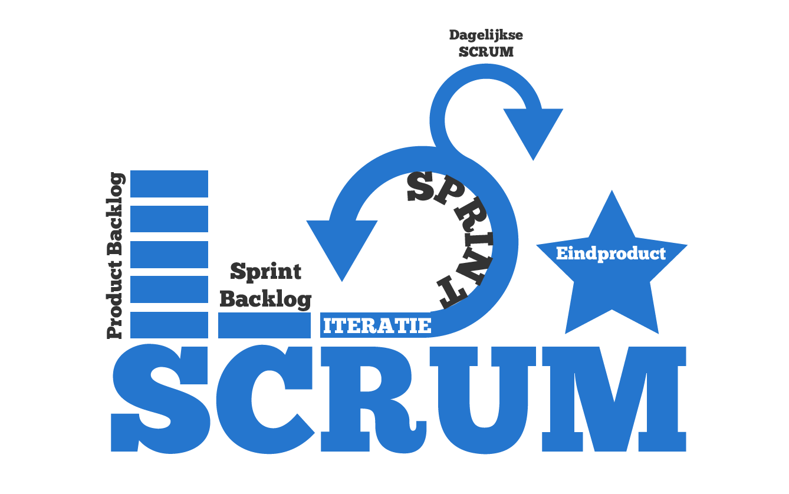
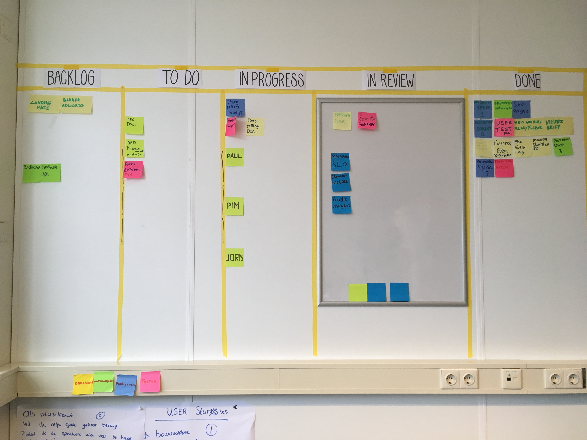

Inleiding
Hieronder vind je mijn opdrachten die ik heb gemaakt voor SCRUM, te beginnen met de criteria zoals in de rubrics beschreven, daar direct onder staan alle opdrachten met de dingen die ik heb geleerd aan de hand van de opdrachten.
Criteria
Theoretische kennis van SCRUM
De student kan basisbegrippen van Scrum uitgeleggen a.d.h.v. voorbeelden uit de proftaak en kan het verschil aangegeven tussen SCRUM en waterval.
Toepassing van Scrum in de proftaak
De student laat duidelijk zien dat de toepassing van Scrum verbeterd is over de sprints waardoor er steeds meer controle is over het ontwikkelproces.
Actieve bijdrage aan het Scrum-proces
De student heeft gedurende het gehele semester een actieve bijdrage geleverd aan de groep. Dat zich uit door concrete oplevering van user story’s, maar daarnaast ook actief betrokken zijn bij het Scrum proces.
SCRUM binnen de proftaak
Als groep hebben we actief gebruik gemaakt van SCRUM, tijdens de sprint 1 ben ik begonnen als SCRUM master, hier heb ik dagelijks de daily stand-up verzorgd om zo het proces in goede banen te leiden, we begonnen met wat er nog gedaan moest worden, en wat we af wilde hebben op die dag, aan het einde van de dag hebben we besproken wat af was en zo hebben we goed kunnen bijhouden wat er dagelijks gedaan was, verder hebben we steeds gebruik gemaakt van het SCRUM bord om zo de vorderingen goed te monitoren, van backlog > to do > in progress > in review > done, zoals in de afbeelding hiernaast is afgebeeld, het verschil met de waterval methode is dat er sprints zijn om zo goed bij te kunnen sturen naar de wensen van de klant en door de daily stand-up kan nog beter bijgehouden worden hoe het proces verloopt en waar er bijgestuurd dient te worden.